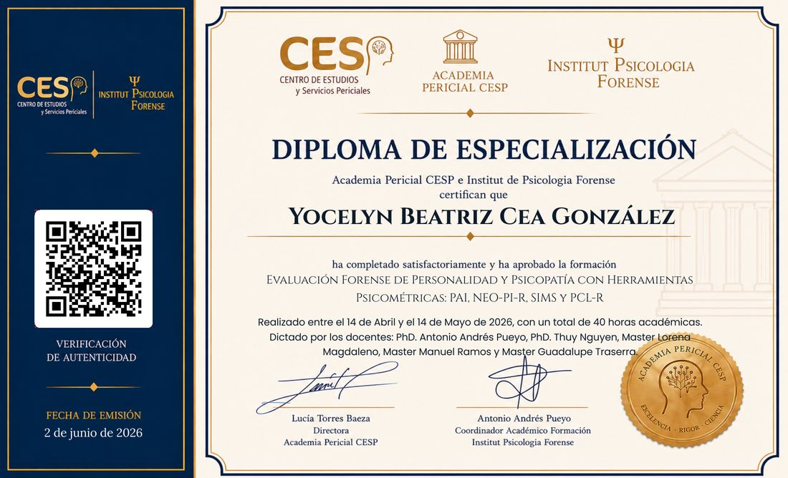
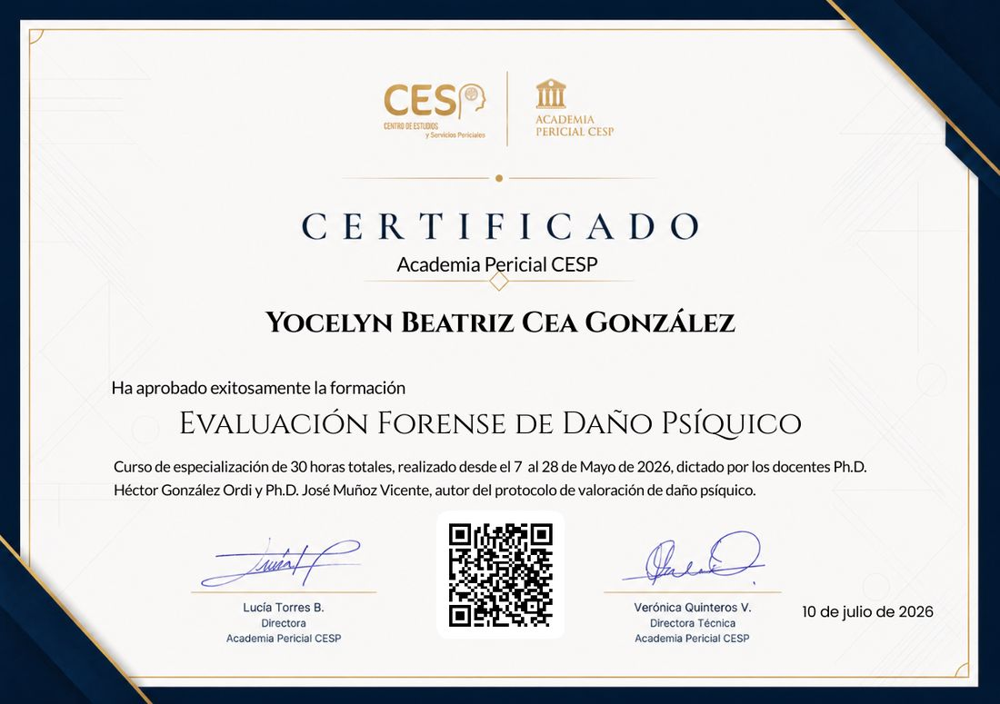
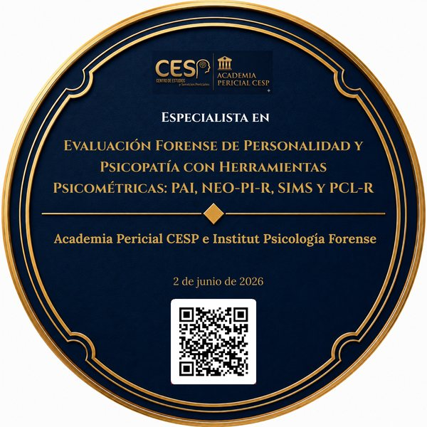

Estabilidad emocional bajo presión
Cómo responde una persona cuando la entrevista incomoda, insiste o simplemente guarda silencio.
Preparación psicológica para la etapa de admisión a la Policía de Investigaciones, el Ejército, la Armada, Carabineros y Gendarmería. Presencial en la Región del Biobío y online en todo Chile.
de los postulantes que he preparado ha aprobado la prueba psicológica
oficial en retiro de la Policía de Investigaciones de Chile
atención online, además de presencial en la Región del Biobío
El proceso de admisión
El ingreso a las instituciones policiales y militares tiene varias etapas. La psicológica es la que genera más dudas y la que deja fuera a más personas — no porque exija un perfil imposible, sino porque casi nadie llega preparado para ella.
Cómo responde una persona cuando la entrevista incomoda, insiste o simplemente guarda silencio.
La evaluación cruza lo que se declara con los antecedentes y con la propia biografía del postulante.
Las razones para ingresar tienen que sostenerse más allá de una frase aprendida de memoria.
Lo que deja fuera a la mayoría
Los instrumentos de evaluación están diseñados para detectar respuestas construidas. La actuación se nota.
Las preguntas sobre la familia, las pérdidas o los episodios difíciles llegan sin aviso. Conviene haberlas pensado antes, no en la sala.
Muchos postulantes llegan sin práctica de entrevista, confiando en que saldrá natural. Es la causa más común de eliminación.
El servicio
Sesiones individuales de una hora, enfocadas exclusivamente en la etapa psicológica del proceso de admisión.
Atención en la Región del Biobío, con hora agendada previamente.
Videollamada para postulantes de cualquier región del país, con la misma estructura de trabajo.
Directo por WhatsApp. Se coordina día y hora según disponibilidad y fecha de evaluación.
Escribir por WhatsAppTrayectoria y credenciales
Preparo postulantes desde una experiencia poco común: una carrera dentro de la Policía de Investigaciones de Chile y una formación clínica y forense en evaluación psicológica.
Esa formación en evaluación forense me permite comprender cómo se construyen y cómo se leen los instrumentos psicométricos y las entrevistas estructuradas. Es el mismo terreno en el que se juega la etapa psicológica de una postulación.



Procesos que preparo
Preparación para la etapa psicológica del proceso de admisión en las escuelas matrices y de formación.
Sin costo
Periódicamente realizo charlas online, sin costo, sobre la etapa psicológica del proceso de admisión: qué se evalúa realmente, los errores más frecuentes y cómo prepararse con el tiempo que queda. Quienes quieran recibir la invitación a la próxima pueden dejar su correo.
Quiero recibir la invitaciónpostulantes de distintas regiones del país participaron en la última charla
Dudas frecuentes
Idealmente apenas se confirma la postulación. De todos modos, también se puede trabajar con plazos cortos: la preparación se ajusta al tiempo disponible antes de la evaluación.
Sí. Es uno de los casos en que más aporta: se revisa qué pudo haber ocurrido en el proceso anterior y se trabaja específicamente sobre esos puntos.
Depende de cada postulante. Algunos resuelven con una sesión; otros prefieren varias, sobre todo cuando hay que trabajar la historia personal o el manejo de la ansiedad.
Ambas. Presencial en la Región del Biobío y online, por videollamada, para postulantes de cualquier región del país.
Se trabaja igual. Cada proceso tiene sus particularidades, pero la etapa psicológica comparte una lógica común en todas las instituciones.
No. Ninguna preparación puede garantizar un resultado, porque la decisión final es de cada institución. Lo que sí ofrece es llegar a la etapa con la historia trabajada, sin improvisar y sabiendo qué se está evaluando.